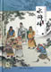

dskalhfjds
《水浒传》
《水浒传》是中国历史上第一部用古白话文写成的歌颂农民起义的长篇章回体版块结构小说，以宋江领导的起义军为主要题材，通过一系列梁山英雄反抗压迫、英勇斗争的生动故事，暴露了北宋末年统治阶级的腐朽和残暴，揭露了当时尖锐对立的社会矛盾和“官逼民反”的残酷现实。
 《三国演义》
《三国演义》
《三国演义》是综合民间传说和戏曲、话本，结合陈寿的《三国志》、范晔《后汉书》、元代《三国志平话》、和裴松之注的史料，以及作者个人对社会人生的体悟写成。现所见刊本以明嘉靖本最早，分24卷，240则。清初毛宗岗父子又做了一些修改，并成为现在最常见的120回本
 《西游记》
《西游记》
西游记以民间传说的唐僧取经的故事和有关话本及杂剧（元末明初杨讷作）基础上创作而成。
 《红楼梦》
《红楼梦》
《红楼梦》是一部章回体长篇小说。早期仅有前八十回抄本流传，八十回后部分未完成且原稿佚失。原名《脂砚斋重评石头记》。程伟元邀请高鹗协同整理出版百二十回全本，定名《红楼梦》。亦有版本作《金玉缘》。